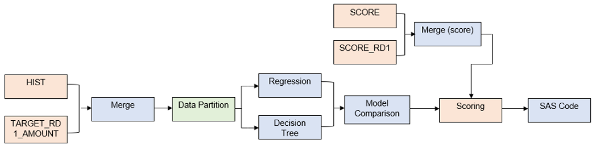

Winning the SAS Cortex Analytics Simulation Challenge
Manny Adachi is an aspiring data scientist from Japan in the Master’s program in Health Data Science. His interests are in motorcycle touring, traveling, and of course data science!!
This is a short post about my participation in the SAS Cortex Analytics Simulation 5 Day Challenge (hereafter, Cortex) in April 2022. Luckily, I became the 1st place winner in the competition. It is not a direct application of what we have learned in the HDS program to the formal job scene. However, I think it can still provide you some idea of how much knowledge we can use outside the classes. Please also see the post by Lucia Biasi from SAS Australia for some details of the interview on me about my experience.
What is Cortex?
Cortex is an analytics simulation game developed by SAS and HEC Montreal. It tests participants’ predictive modeling skills using a real-life problem as they compete against peers. The game scenario was to help a fictitious non-profit organization which needed to figure out who to contact from a list of potential donors. Using SAS Enterprise Miner, participants built a predictive model and generated a contact list to maximise the surplus amount (i.e. donation amount – cost of contacting). For the duration of Cortex, participants were allowed to revise the contact list up to around 30 times. The prior versions were also maintained in the system so participants are able to select their best contact list later on.
What did I learn through Cortex?
It was my first and fun experience using a GUI (Graphic User Interface)-based tool to construct a pipeline of data cleaning, exploratory data analysis, modeling, and testing. The Cortex GUI allows users to interact with tools through icons, menus, and mouse. Therefore, it is more intuitive for the uses to have a control of the tool than entirely coding the required tasks. Although the tools we used in the school assignments such as Jupyter Notebook, R Studio, and SAS Studio have GUI components, with Cortex we could complete the tasks mostly without coding. It was, of course, way more convenient than mostly coding like we did for the school assignments. I could spend more time on thinking how to optimize the surplus amount (e.g., comparing the result using different base models and (hyper)parameters, how to minimize overfitting, deciding where to cut the list from the model (*cutting was done manually and still acceptable)).

So, am I here just as a shill and say how brilliant the SAS platform was? No (although I know that I am already helping them…). Instead, I really want to emphasize that what ends up making the difference sometimes are something beyond knowing how to code a fancy and complex statistical or machine learning model. In my case during Cortex, what helped me were (1) the base knowledge from HDS about the characteristics of each machine learning model, (2) how to read the training / validation score graphs, (3) the strategy of submission time to minimize the other competitors’ time to revise their lists (i.e., submitting the best list when the game was approaching to the end and other competitors appeared satisfied with the moderate but not the best list), and (4) the persistency until the very last minute of the game.
Here is a little more comment about (1). Although I cannot mention which model I used for my final contact list, I can say it helped me avoid overfitting my model and possibly bluff the other competitors with the list from the overfit model. It was one example of how we can apply our knowledge from HDS program to strategize our action.
Winning the game, then what?
As the winner, I was offered the badge and 4-week internship at SAS Australia. During the internship I was able to (1) connect with SAS members in various teams such as technical support, pre / post-sales, delivery consulting, and customer success and learn about their roles and offerings, (2) access the study materials for SAS Viya programming associate exam for free, and (3) earn the certificate after passing the exam. Beside the time to connect with SAS members, I spent the majority of time studying for the exam, so it is indeed a large part of what I have learned through the internship. One thing I hoped to do was to practice how to integrate the models that we build with external sources such as Python or R. The integration is one of the key highlights on SAS Viya’s capability.
I have to confess that I did not know much about the company and what they offer until several days after my internship started. (Please don’t blame me on this since obviously I got this internship opportunity without any interviews). In short, they offer the solutions which support the operations in the whole analytics life cycle, and they have been the long-established and leading vendor of the statistical data analysis software for various sectors such as government / public service, healthcare, banking / finance, and academia. You can also learn more about SAS from a post by Emmett Boudreau.
Conclusion
I definitely recommend other students to participate in the Cortex competition hosted by SAS (or any hackathon events). It gives us not only the data science experience outside of class, but also the chance to have our hands on the analytics platforms used in the industry and connect with other participants and sometimes people from industry.